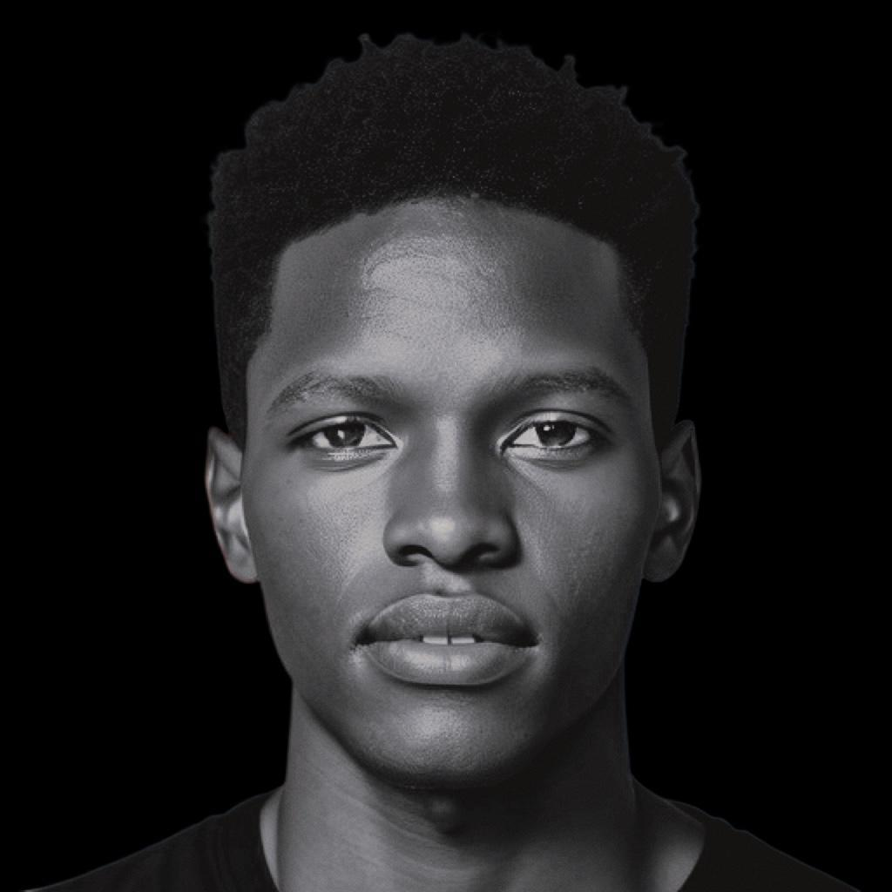

Nationality: Kenyan
Location: Tallinn, Estonia / Kenya
Phone: +254 713 272 166
Email: alvinandy16@gmail.com
Languages: English, Kiswahili, German
About Me
I am a software engineer and data analyst with hands-on experience building digital systems, ML-assisted tools, and data-driven solutions across agritech, sustainability, customer intelligence, and public-sector innovation. My work spans software development, data workflows, AI-assisted problem solving, and platform thinking.
I am currently part of the Digital Explorers Program and working as an intern at Trinidad Wiseman in Tallinn, Estonia, where I contribute to real-world software and data problems in an international environment.
My background includes leading digital systems at Chemusian Farmers Cooperative — digitizing operations with farmer digital IDs and web-based tools — and exposure to cloud infrastructure and smart city contexts at Konza Technopolis. At iLab Africa I applied GIS, Power BI, and field research to sustainability and data-informed recommendations. I am focused on practical innovation with measurable impact.
Beyond work
I have volunteered in customer-facing and operational roles (e.g. Kenyatta National Hospital, Nairobi) and have led university and community initiatives, including as President of the German Club at Strathmore University. I am passionate about agriculture, sustainability, and technology that serves real communities.